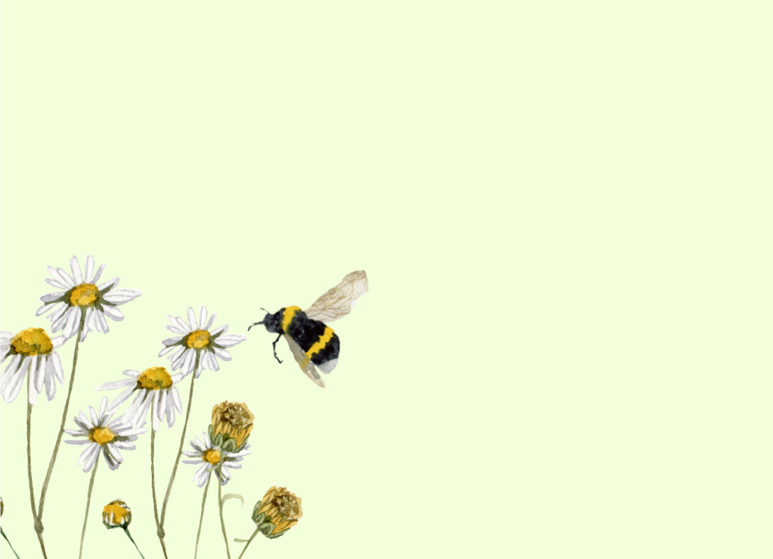
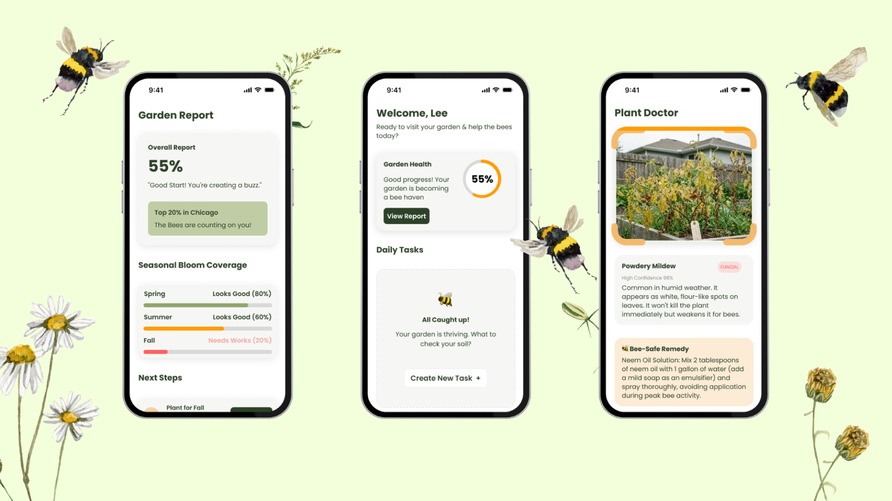
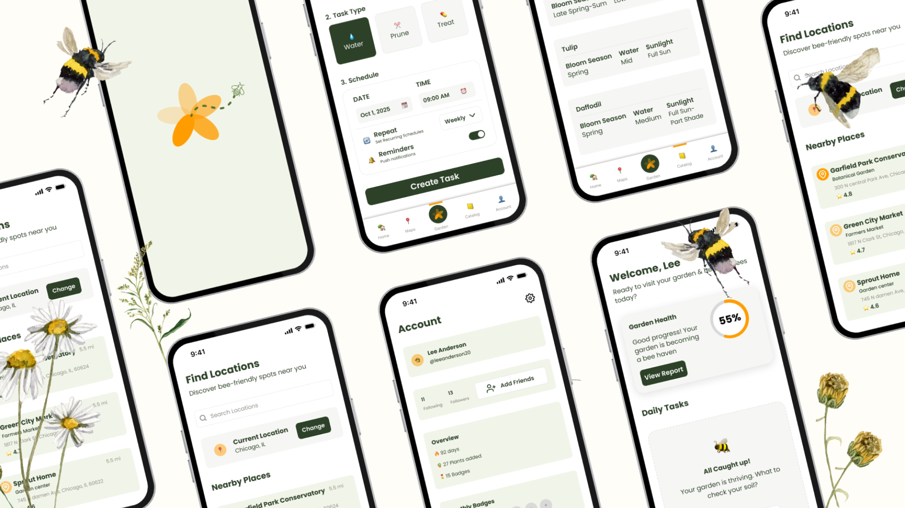

BeeFriendly.
A gardening companion app that helps people build pollinator-friendly gardens — built end-to-end with a Forest & Honey design system.

Pollinators are declining.
Most gardeners want to help.
The information already exists — which plants, which seasons, which microclimates. But it's scattered across PDFs, university extensions, and forum threads. BeeFriendly is the answer to "I want to do something but I don't know where to start."
Scope. An end-to-end mobile app — onboarding, plant guide, garden planner, and seasonal reminders — supported by a full Forest & Honey design system covering variables, components, and shape language.
Who we're designing for.
Generative interviews with 6 home gardeners — beginners through intermediates — surfaced three personas. Each one needed different scaffolding: not because they wanted different things, but because their confidence in their own decisions varied wildly.
The Apprentice
"I just bought a balcony planter." Needs strong onboarding, plant suggestions matched to their zone, and zero shame for asking basic questions.
The Curator
"I have a yard, I know what works." Needs the planner more than the guide. Wants seasonal sequencing and pollinator-targeting, not a 101 course.
The Steward
"I'm trying to fix the back lot." Multi-year project. Needs progress tracking, year-over-year reminders, and content geared toward longer time horizons.
Forest & Honey.
The visual system started with a question: what does a tool for tending pollinators feel like? The answer wasn't "nature app" — it was quiet competence. Earthy greens, warm honey accents, generous spacing, and 20px corner radii throughout to keep every surface soft.
Color Palette
Typography Scale
Shape Language
A consistent 20px corner radius on every surface — cards, sheets, buttons, inputs. The result is a UI that feels coherent without being uniform: same softness, varied scale, all the way down to micro-elements like chips and badges (12px).
The core flow.
The screens carry the entire app — onboarding, garden health reports, daily tasks, plant diagnosis. Each was prototyped, tested, and iterated against the design system, not the other way around. The system existed first; screens used it, flagged gaps, and the system grew.


Tested with real gardeners.
Two rounds of moderated usability testing, 6 participants per round. Tested against the three personas with task-based scenarios: "You just moved into a new place — set up your garden." Iteration between rounds focused on the planner's discoverability and the onboarding pacing.
Onboarding's "zone" question stalled new users.
Beginners didn't know their USDA hardiness zone. Solved with location-based auto-detect + a fallback "I'm not sure" path that walks through it gently. Subsequent round: 100% completion.
The planner was loved — once people found it.
Hidden behind a tab icon initially. Promoted to a hero card on the home screen for round two. Engagement with the planner doubled, with no other changes.
The system held up under stress-testing.
Adding new screens during round-two iteration required zero new components. Every new pattern composed from existing primitives — the strongest validation a design system can get.
By the numbers.
What the work taught me.
Building the design system before the screens felt slow at first. By round-two iteration, every change took minutes instead of hours — because the question was never "what should this look like" but always "which token applies here."
— Notebook entry, Week 9Next steps. Ship a beta with a small cohort of round-two testers, validate the seasonal-reminder system against an actual growing season (not just a synthetic timeline), and explore community features — co-design with stewards is the obvious place to start.